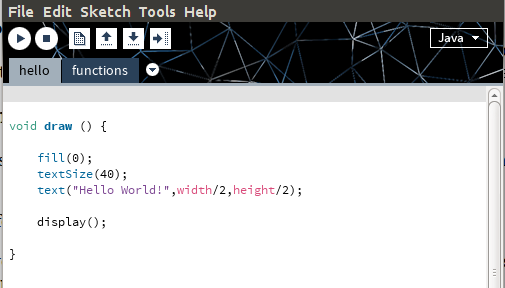
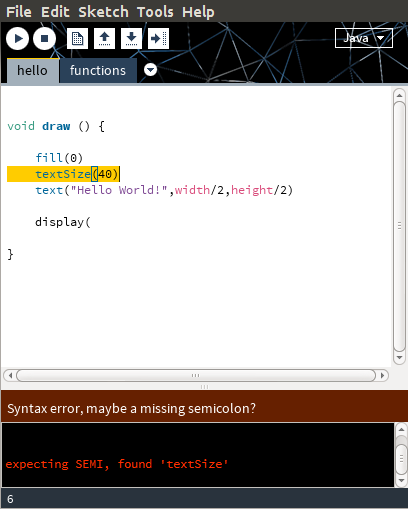
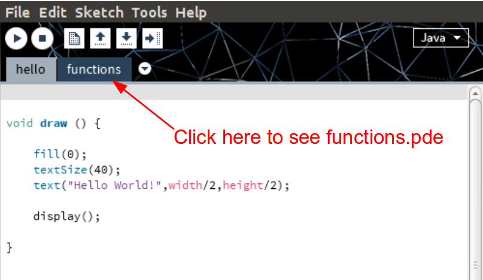

button and stop the code by pressing the
button and stop the code by pressing the  button.
button.
A group of programmers came together to create a programming language that is as simple as possible while allowing users to take advantage of all of the interactivity and media features that we love to use on the internet. This programming framework is processing.org
All the action happens in the "draw" function. Below is a Hello World! example using processing.js:
void draw () {
fill(0);
textSize(40);
text("Hello World!",width/2,height/2);
display();
}
See what this code does by clicking hello.html
As you can see, the code writes "Hello World!" in the middle of the screen. The textSize() function sets the font size and fill(0) makes the text solid black.
If you are familiar with C/C++ the draw function is very similar to the main function except that draw() is run over and over again. In this "Hello World!" example, the words "Hello World!" are being drawn 60 times per second on the screen and the draw() function is run each time. This is definitely overkill if all you want to do is write text on the screen, but it makes for a fun platform for creating interactive games.
The program you installed earlier is the Processing Development Environment (PDE). For this reason many of the files we will work with will have .pde extensions.
Once you have the program installed, create a folder on your desktop called hello
Download hello.pde and functions.pde You can also download these files from this link
Move/drag/copy hello.pde and functions.pde into the hello folder. Open up this folder and double click on hello.pde to open up this file in the Processing Development Environment.
Your screen should now look something like this:

You can run the code simply by pressing the button and stop the code by pressing the button.
If you are curious, you can get much more info on the Processing Development Environment at this link. Please note that we will only use "Java" mode as shown in the upper right hand corner of the screen in the image above.
Notice that in the code used in Lessons 1 & 2, there is a semicolon after every line and every parenthesis is closed. If you do not put a semicolon after every line, and close every parenthesis the code will usually fail.
For example consider this very bad example:
void draw () {
fill(0)
textSize(40)
text("Hello World!",width/2,height/2)
display(
}
Confirm that this program fails by taking out some of the semicolons and parenthesis, save the program and then click to see what happens and what error messages you get.
You should see something like this:

The key thing to see in the above is the friendly error message: "Syntax error, maybe a missing semicolon?" at the bottom and the yellow-highlighted text which shows approximately where it goes. Sometimes the semi-colon will go in the line shortly before the line that is highlighted, which is the case here. The first problem to fix is to add a semicolon after fill(0)
By the way, If the above code was embedded in a web browser you would just get a white screen, as you can see from clicking hello_fail.html
You can add comments to the code as long as you put // at the beginning of the line, for example:
// The draw function is run many times
void draw () {
// The fill function makes the text solid black
fill(0);
// This determines the font size
textSize(40);
text("Hello World!",width/2,height/2);
// Now run any other graphics
display();
}
Confirm that this code works just fine by adding comments to your code, saving the program and then click to make sure you can still see the "Hello World!"
If this code were embedded into a webpage it would work equally well, as you can see from clicking hello_comments.html
You can create your own variables using "float". Consider this example:
void draw () {
fill(0);
textSize(40);
float x_hello=width/2;
float y_hello=height/2;
text("Hello World!",x_hello,y_hello);
display();
}
Notice that this code works exactly the same as befreo by making these changes, clicking save and then pressing
Here is the embeded version: hello_var.html
To make things simpler for my students, I will put the important code in files like hello.pde, or planetoids.pde or lunardescent.pde, etc. and I will put as much of the mundane parts of the code into a file called functions.pde.
Click the tab that says "functions" in the processing environment to see what is there. This will be just to the right of the tab that says "hello".

You don't need to understand what goes into functions.pde. Just remember that the file exists and you'll need to have it around in order for things to work. In the programming exercises that are to come, the functions.pde files will be much more complicated than the "Hello World!" example. This helps us create interesting programs without overloading you with lines and lines of code.